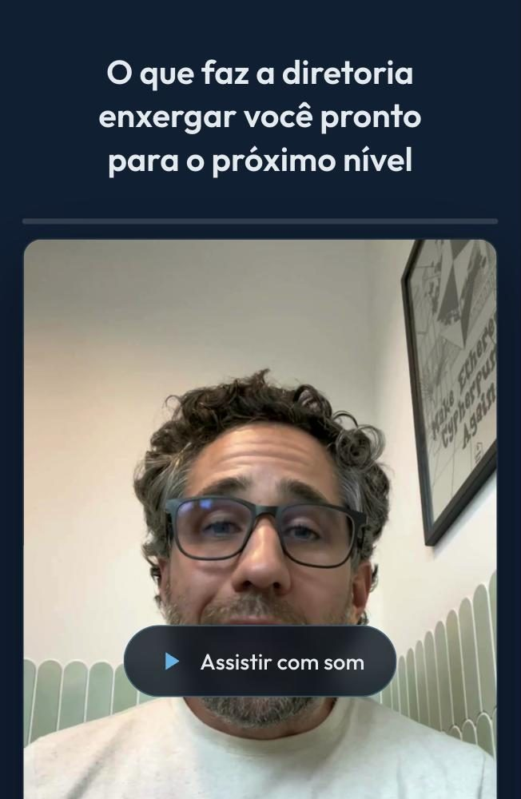
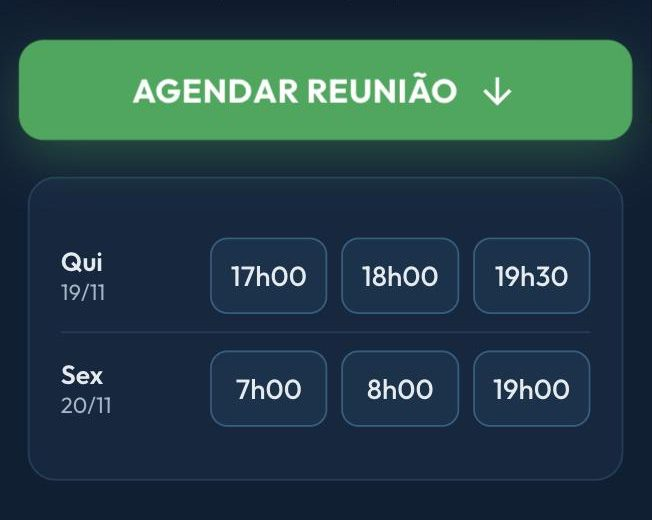
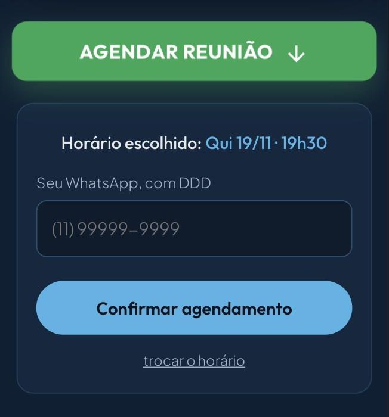

Atualizado em · leitura de uns 8 minutos · fica como referência: cada mudança nova entra aqui
O que está acontecendo
Marcio, até a semana passada a gente tinha uma porta de entrada só: anúncio, formulário e você ligando. Nesta semana eu abri mais portas e montei uma escada de produtos. Quero que você enxergue o desenho inteiro, porque daqui para frente vai chegar gente em você por caminhos diferentes, e cada caminho pede uma conversa diferente.
Em uma frase: mais portas de entrada, e um produto certo para cada cargo.
o porquê
De 31/08 a 04/10, 41 leads de São Paulo preencheram o formulário e não chamaram no WhatsApp. Nenhum agendou reunião. Ao mesmo tempo, de cada duas reuniões realizadas em SP, uma virava venda. O problema estava em levar o lead até a reunião, e foi aí que mexemos.
O que entrou no ar de 16 a 19/11:
novo
Funil de VSL
VSL é o vídeo de vendas. O lead assiste a um vídeo meu e marca a reunião sozinho. É o que mais muda o seu dia.
novo
Diagnóstico de carreira
Um quiz que lê o momento da pessoa e convida para o produto certo conforme o cargo.
novo
Líder Inspira Líder
Entrevista ao vivo com um líder convidado, aberta ao público. Quem se inscreve vira lead aquecido.
novo
LAP à venda e área de alunos nova
O LAP ganhou página de vendas com compra direta, e as aulas estão indo para uma área de alunos nossa.
segue igual
Funil principal
Anúncio, formulário, WhatsApp e as suas ligações. Nada mudou no processo nem nas mensagens.
A ligação fria para convencer alguém a marcar reunião era a parte mais difícil do seu trabalho. O vídeo passa a fazer isso. O lead chega na reunião sabendo quem eu sou, o que é a Liderium e tendo escolhido o horário.
Como eraO lead preenchia o formulário e esperava. Você ligava para apresentar a Liderium e marcar a reunião.
Como ficaO lead preenche o formulário, cai numa página, assiste a um vídeo de 8 minutos e escolhe o horário na hora. Recebe o convite por e-mail e dois lembretes automáticos no WhatsApp.
O que você fazConfirma por ligação e conduz a reunião de 1 hora.
O que o lead vê
Arraste para o lado. São as telas reais, no celular.

1. O vídeoEle chega do formulário e assiste. Não dá para pular nem acelerar.

2. Os horáriosAos 5 minutos aparece o botão, com dois dias e até três horários em cada.

3. O WhatsAppEle escolhe o horário e digita só o número. Nome e e-mail vêm do formulário.4. MarcadoRecebe o convite por e-mail. Se tocar no botão, chama no WhatsApp pedindo o link.
A lógica do agendamento
Poucos horários, de propósito. Só hoje e o próximo dia útil. Quem marcava para muito longe faltava.
Hoje: 17h, 18h e 19h30. Próximo dia útil: 7h, 8h e 19h. De segunda a sexta.
Antecedência mínima de 3 horas. Às 15h, o das 17h já não aparece.
Só aparece horário em que você ou eu estamos livres. Se os dois estão ocupados, o horário some da página.
Você é sempre a primeira opção para conduzir. Se estiver ocupado, sou eu.
Um WhatsApp, um agendamento. O mesmo número não marca duas vezes.
Reunião de 1 hora, pelo Meet, com o link já no convite e no cartão.
O caminho, passo a passo
Vê o anúncio em vídeo no InstagramCampanha própria, só São Paulo, rodando em paralelo ao funil principal.
Preenche o formulário e toca em "Agendar"
Assiste ao vídeo na páginaO botão de agendar só aparece depois de 5 minutos de vídeo.
Escolhe o horárioSempre dois dias de opção. Hoje: 17h, 18h e 19h30. Próximo dia útil: 7h, 8h e 19h.
O cartão aparece sozinho no Kommo, no funil "Funil VSL", coluna "2 · Agendou"Já vem com data, hora, link do Meet e quem conduz.
Você recebe o convite na sua agendaEu entro como opcional. Se você estiver ocupado naquele horário, quem conduz sou eu.
O lead recebe lembrete 4 horas e 1 hora antesAutomático, pelo WhatsApp.
Você liga para confirmarLigação curta. O lead não foi avisado dela, então é só confirmar a presença, sem reapresentar a Liderium.
Você conduz a reunião de 1 hora pelo Meet
Você move o cartãoPara "3 · Reunião realizada" ou "4 · Faltou".
atenção
Sua agenda agora decide os horários
A página só oferece um horário se você ou eu estivermos livres. Ela olha a sua agenda do Google: evento seu ou convite aceito conta como ocupado. Convite que você não respondeu conta como livre. Então mantenha a agenda em dia e, se não vai poder, bloqueie o horário.
Quando o lead não agenda
Vai acontecer: a pessoa preenche o formulário e não chega a marcar. O primeiro lead do funil fez isso e nem abriu a página. Esse cartão fica parado na coluna "1 · Lead do formulário", e é aí que você entra.
O que você faz
Aborda no mesmo dia pelo WhatsApp, como você já faz com um lead de formulário.
Se ele topar conversar, manda a página da VSL para ele assistir e marcar: oyurygarcia.com.br/conversa
Se sentir que é melhor marcar direto, marca e me avisa.
em definição
Uma mensagem própria para esse momento, com um áudio meu, está sendo preparada. Quando ficar pronta, entra aqui e substitui a abordagem acima.
feriado
Feriado não tem horário
A página pula o feriado, como pula sábado e domingo, e oferece os dois dias úteis seguintes. No feriado de sexta, 20/11, o lead vê segunda e terça.
O diagnóstico de carreira
Nem todo mundo que chega até mim é perfil da Mentoria. O diagnóstico resolve isso: a pessoa responde, recebe uma leitura do momento dela e um convite para o produto que faz sentido para o cargo. Ninguém fica sem próximo passo.
Como eraUm arquivo que eu mandava e analisava com o ChatGPT, um a um, pelo WhatsApp.
Como ficaUm quiz no site, de até 8 minutos, com perguntas diferentes conforme o cargo. No fim, um relatório personalizado e um convite.
Quem recebe qual convite
Cargo
Convite
Chega em você?
Analista, especialista e supervisor no início
Conhecer o LAP
Não. Compra direto.
Supervisor mais avançado
Conversa com a equipe
Sim, pela página da VSL
Coordenação e gerência
Mentoria Liderium
Sim, pela página da VSL
Gerente sênior, head, diretoria
Mentoria individual
Chama no WhatsApp. Passa para mim.
Empresário
Mentoria Empresarial
Tela própria. Passa para mim.
o que isso muda para você
Quem vem do diagnóstico e agenda cai no mesmo funil de VSL, com o mesmo cartão e os mesmos lembretes. A diferença é que essa pessoa já leu um relatório sobre a própria carreira. Vale abrir a reunião perguntando o que chamou a atenção dela ali.
fase de teste
O relatório completo hoje só abre com código de acesso. Os primeiros códigos foram para os inscritos do Líder Inspira Líder. As respostas do quiz ficam numa planilha minha e ainda não entram no Kommo.
Líder Inspira Líder
É um quadro em que eu entrevisto líderes que foram longe. Para o mentorado é bônus. Para quem está de fora é um jeito de me conhecer sem anúncio e sem pressão de venda.
Como funcionaA pessoa se inscreve numa página, recebe o convite com o link do Meet, um e-mail de boas-vindas e entra num grupo de avisos no WhatsApp. No dia, recebe o lembrete. Depois do episódio, recebe o diagnóstico de carreira com um código.
primeiro episódio
Aconteceu na quarta, 18/11, com a Carolina Vido: "Do atendimento à liderança global". Os inscritos receberam o diagnóstico de carreira na mesma noite.
O que você fazPor enquanto, nada de abordagem ativa. Os inscritos ficam numa planilha, fora do Kommo. Se algum deles agendar pelo diagnóstico, chega em você pelo funil de VSL, e você já sabe que é alguém que me viu ao vivo.
em definição
O que fazemos depois do evento com quem assistiu e com quem faltou, e quando os inscritos passam a entrar no Kommo.
LAP à venda e a área de alunos nova
Eu estou saindo da Eduzz e levando as aulas para uma área nossa, com a nossa cara. E o LAP, que estava parado, virou produto de entrada: quem ainda não é perfil da Mentoria tem o que comprar.
Como eraAulas na Eduzz. O LAP não tinha página nem forma de comprar sozinho.
Como ficaÁrea de alunos nova no MemberKit com dois cursos: Mentoria Liderium e LAP. O LAP tem página de vendas, e quem paga recebe o acesso sozinho por e-mail, na hora, por 1 ano.
LAP em números
Formação em gestão e liderança. Na Black Friday, R$ 197. Página: oyurygarcia.com.br/lap. O primeiro módulo abre na compra e os seguintes entram nas semanas seguintes.
O que você fazQuando o lead não é perfil da Mentoria (analista, supervisor no começo), você tem para onde mandar: o link do LAP. Não precisa de reunião.
ainda não mudou
Os mentorados atuais continuam assistindo pela Eduzz. A mudança deles para a área nova vem depois, e eu aviso antes. Para quem fecha a Mentoria agora, o acesso segue como você já faz.
Situações do dia a dia
Escolha o que você faria. A resposta aparece na hora.
Perguntas que você pode ter
A partir de hoje
Marque o que já está valendo no seu dia. Fica salvo neste aparelho.